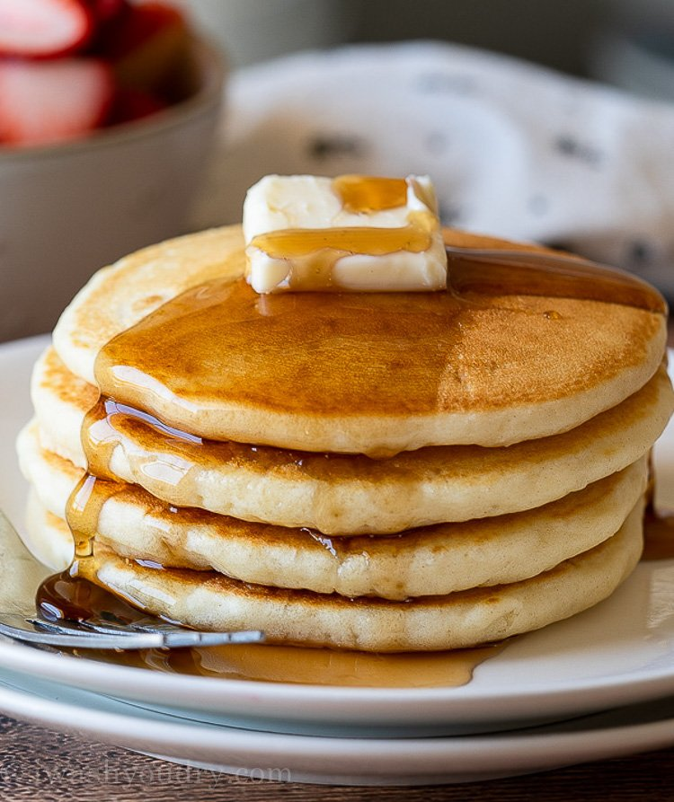

Simple and Easy Pancakes

Breakfast is an important meal of the day and sometimes it can be difficult to squeeze in time to cook and eat in the morning.
This Simple and Easy Pancake recipe will make you look like a pro at breakfast without using too much of your time.
Ingredients
- 1 1/2 Cups All-Purpose Flour
- 3 1/2 teaspoons baking powder
- 1/4 teaspoon salt
- 1 tablespoon white sugar
- 1 1/4 cups milk
- 1 egg
- 3 tablespoons butter, melted
Procedure
- In a large bowl, sift together the flour, baking powder, salt and sugar.
Make a well in the center and pour in the milk, egg and melted butter; mix until smooth.
- Heat a lightly oiled griddle or frying pan over the medium-high heat. Pour or scoop the batter onto the griddle,
using approximately 1/4 cup for each pancake. Brown on both sides and serve hot.
- Put some butter and your choice of syrup, fruit jam, or condensed milk